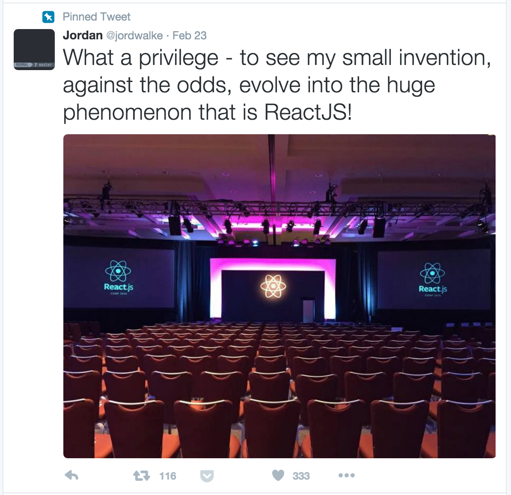
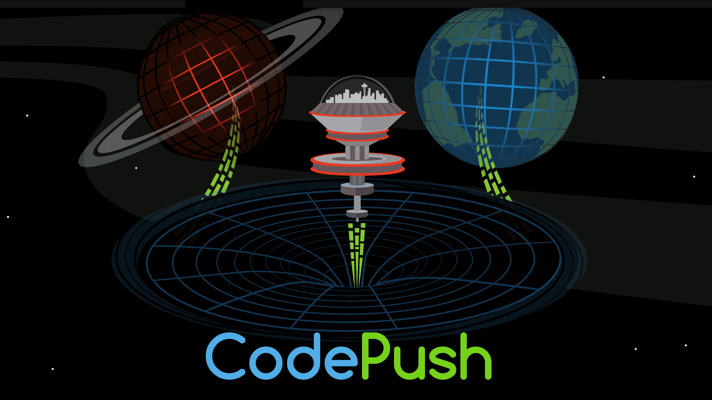
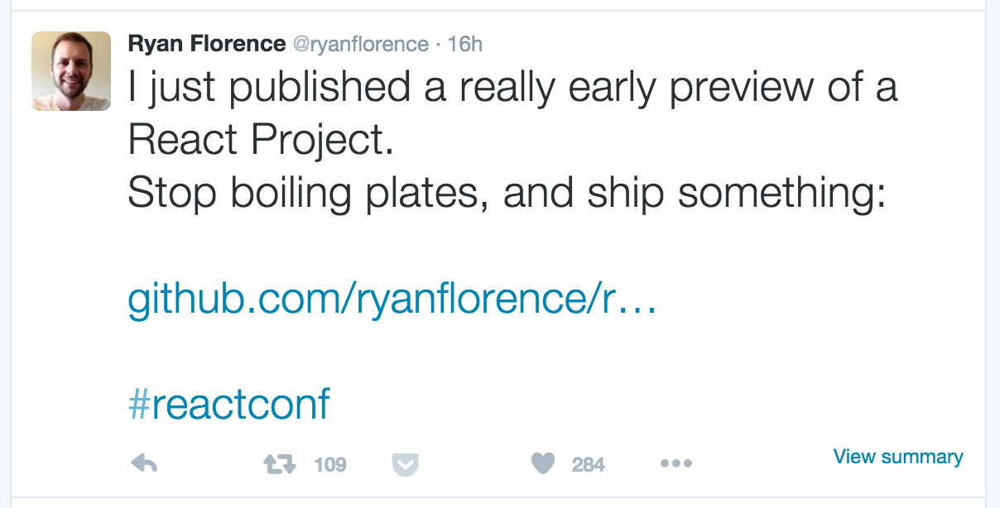

React.js Conf 2016:
The Good Parts
React Conf 2015 - Quick Review
New paradigm for mobile web app development
React Conf 2015 - Quick Review
New paradigm for mobile web app development
New framework for simplifying client-server data management
React Conf 2015 - Quick Review
New paradigm for mobile web app development
New framework for simplifying client-server data management
New query language designed for graph data, optimized for Relay
Developers, the
next morning...
React Conf 2016 - New Stuff
New paradigm for mobile web app development
React Conf 2016 - New Stuff
OK, not really. That's just what it felt like :)
We're investing heavily in React Native
—Nick Shrock, Facebook
React Conf 2016 - New Stuff
React 15.0.0
Release candidate shipping next week
No more React ids in the DOM, 10% faster
Wondering about the jump from v0.14?
React Conf 2016 - New Stuff
A framework for building rich text editors in React, powered by an immutable model
Powers the richt text inputs on Facebook.com

React Conf 2016 - New Stuff
That's about it.
Some interesting community stuff, but nothing else from FB
Developers, the
next morning...
React Conf 2016 - New Stuff
What's the Deal?
It was spelled out clearly in the keynote:
The Facebook framework teams have 3 priorities for 2016:
React Conf 2016 - New Stuff
What's the Deal?
It was spelled out clearly in the keynote:
The Facebook framework teams have 3 priorities for 2016:
1. Execution
React Conf 2016 - New Stuff
What's the Deal?
It was spelled out clearly in the keynote:
The Facebook framework teams have 3 priorities for 2016:
1. Execution
2. Execution
React Conf 2016 - New Stuff
What's the Deal?
It was spelled out clearly in the keynote:
The Facebook framework teams have 3 priorities for 2016:
1. Execution
2. Execution
3. Execution
React Conf 2016 - New Stuff
What's the Deal?
It was spelled out clearly in the keynote:
- They are "investing heavily" in React Native
React Conf 2016 - New Stuff
What's the Deal?
It was spelled out clearly in the keynote:
- They are "investing heavily" in React Native
- Goal is to build a "Horizontal platform"
React Conf 2016 - New Stuff
What's the Deal?
It was spelled out clearly in the keynote:
- They are "investing heavily" in React Native
- Goal is to build a "Horizontal platform"
- Focus on tooling, workflow and overall developer experience
React Conf 2016 - New Stuff
This is actually a good thing.
It's a sign of a rapidly maturing ecosystem
React Conf 2016 - New Stuff

React Conf 2016 - New Stuff
This is actually a good thing.
Facebook committed to execution, stability and "platform"-building
React Conf 2016 - New Stuff
This is actually a good thing.
In the age of "JavaScript
fatigue" it's probably OK to slow down a little
Rich Text Editing with React
Most interesting official announcement
Interesting overview of ContentEditable (the "good parts")
Breakdown of how they use it on Facebook.com
Draft.js open source announcement
Web-like Release Agility
Most unexpected
Toolchain and dev process by... Microsoft?
Web-like Release Agility
Most unexpected
Toolchain and dev process by... Microsoft?
And it actually looks... pretty good?!
Web-like Release Agility
Impressive demo, various interesting tools:
- VS Code: Good JS auto-complete, breakpoints
- React Extensions: Syntax support for React (Native) and JSX
- CodePush: Mobile app deployment, side-loading, beta builds

Optimising React Native: Tools and Tips
Most useful
Excellent overview of debugging React Native apps
- Perf monitor: realtime RAM, view counts, UI/JS fps graphs on device
- Systrace: markers for boundary operations, native modules, lifecycle methods
- CPU profiler: Debug CPU bottlenecks
Universal GL Effects for Web and Native
Most impressive
gl-react (https://projectseptemberinc.gitbooks.io/gl-react/content/)
https://www.shadertoy.com/view/ld3Gz2
https://github.com/ProjectSeptemberInc
https://github.com/gre/gl-react-inspector
Rethinking All Practices: Building Applications in Elm
Most entertaining
Let's not use "isomorphic applications" mmkay?
Elm - transpiles to JS
Reporting vs preventing errors
Flow - gradual typing - "code that is hard to type will not be typed"
Elm has static types (no runtime errors, no null type)
Enforces pure functions (no side effects)
Uses immutable data
Guides you to writing better programs
Keynote
3 priorities for 2016: execution, execution, execution
Mobile Ad Mgr - 80-90% code reuse, feels native, single team for iOS + Android
FB investing heavily in React Native - more consumer-facing apps on it
"Learn once, write anywhere" -> Horizontal platform
React: What Lies Ahead
UX:
1. Animations (mainly web)
2. Mobile gestures (simple API, pure JS)
3. Make lists fast - windowing, chunking, avoid reflows - "what if layout done in React"
D(eveloper)X:
1. New project standup
vim app.js
react run --platform=web app.js
2. Dev tools
react-devtools
react-transform-hmr
nuclide, deco
3. Data management - combine best of setState, reduc, relay
React 15.0 RC next week - no more react ids, 10% faster
A Cartoon Guide to the Wilds of Data Handling
High-level visual overview of Flux, Redux and Relay
https://code-cartoons.com/
Demystifying Tech Recruiting
Meh.
React, Meet Virtual Reality
Why VR? Creative tools, educational experience, togetherness
VR is hard - 8ms latency max, 60 fps (mobile) 90fps (web) min, separate rendering per eye
A-Frame (https://aframe.io/examples/showcase/anime-UI/)
Building a Progressive Web App
Flipkart - transitioned from web to app-only
India market - mostly 2G mobile connections
App Shell architecture - static UI shells generated at build time
Offline first - service workers
Reuse store data
Push notifications (via web workers) https://developers.google.com/web/fundamentals/getting-started/push-notifications/
How To Use React In A Wedding Gift Without Being A Bad Friend
Jeoparty
Hardware answer buttons + Raspberry Pi + Arduino + Johnny-Five + React + jService.io
Voice recognition for answering
Lightning Talks
Oy - Email templating with React (https://github.com/revivek/oy)
Gatsby - React static site generator from Markdown (https://github.com/gatsbyjs/gatsby)
NavigationExperimental - New React native component for navigation state management
Nuclide - Atom package for React native development, debugger, inspector, Flow support (http://nuclide.io/)
Fuse - Declarative UX framework (https://www.fusetools.com/)
Realm - Mobile DB for React native (https://realm.io/) - fast, async, object-based
====== DAY 2 ======
Team × Technology
Exponent (https://exponentjs.com/)
Distribution for ReactNative mobile apps
Demos of mobile app performance
Team qualities for RN - open to new stuff, unafraid to look under the hood, mobile background
"Success comes from a hustler mindset, not experience with React"
"Experience with mobile more important than web experience"
"Draw lines of ownership between features rather than technologies"
Redux, Re-frame, Relay, Om/next, oh my!
State mgmt options:
PORC - Plain Old React Component
- Root component holds state
- easy to use, hard to manage
Redux
- declarative, immutable, encapsulated mutation logic, testable
- boilerplate - new action creation requires editing 3 files
Re-frame (closurescript, similar to Redux) - https://github.com/Day8/re-frame
- Subscription-based state change
Relay
- Server-defined GraphQL queries
- tight integration
- very high setup cost and complexity
Om/next - like Relay in ClosureScript
- Removes GraphQL server dependency
- Support for static and client-only state
Recommendations:
- Have conventions
- Use pure components
Lightning Talks
- Contribute to OSS
- ReactNative is awesome, but has issues
- Concept for streaming GraphQL
- ReactNative for Web - https://github.com/necolas/react-native-web
- "Learning" other languages improves your JS
Performance Without Compromise
How Netflix renders at 60fps in under 100ms on stick 465x slower than typical laptop
react-gibbon
Composition over inheritance
Higher-order components over mixins
A GraphQL Framework in Non-JS Servers
Overview of Falcor vs GraphQL
Graphene - Python implementation of GraphQL (http://graphene-python.org/)
Easier to maintain than REST
GraphiQL (docs)
Resolver = Parse + Firebase + Graphene (open source) - http://resolver.cloud/
Speeding up Startup for Large React Apps
Packaging code modules
Move branching code to server so only one branch gets downloaded
Inline requires (lazy init)
No actual code, but good ideas that can be adapted
Back to React
Cycle (http://cycle.js.org/)
Elm architecture
Lightning Talks
- react-armor (https://github.com/elierotenberg/react-armor)
Protect DOM from tampering using crypto transforms (ads, UA- scripts, etc)
obfuscate class name, tag name, DOM tree structure
- Enzyme (https://github.com/airbnb/enzyme)
Testing utils for React and RN
Find DOM nodes with $ like syntax, helpful for unit testing
react-native-mock (https://github.com/lelandrichardson/react-native-mock) - Mocks of the entire RN API
- Calypso (https://github.com/Automattic/wp-calypso) - open source of WordPress.com
Showcase of a large (100MM users) SPA
- RxJS (http://reactivex.io/) - "Observable done right"
- Scratch (https://scratch.mit.edu/)
Screact - prototype of Scratch outputting to RN on mobile
How To Use React In A Wedding Gift Without Being A Bad Friend
Jeoparty
Hardware answer buttons + Raspberry Pi + Arduino + Johnny-Five + React + jService.io
Voice recognition for answering
React Project
By Ryan Florence of React Router fame
A dependency--not a boilerplate--to make your React project a delight to develop

Thanks!
 ←
→
←
→
/
#